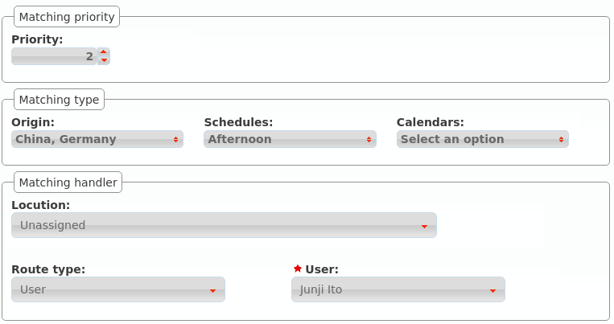
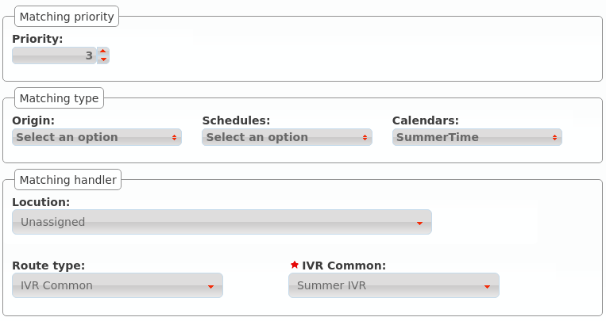

Rutas condicionales¶
Las rutas condicionales permiten alterar la lógica de llamadas bajo los siguientes criterios:
Quién está llamando.
A qué hora está llamando.
Qué día está llamando.
Estado de candado(s)
Las rutas condicionales se pueden elegir en tres secciones:
- DDIs
Extensiones
Opciones de IVR a medida
Truco
El resto de secciones pueden utilizar rutas condicionales por medio de una extensión que apunte a una ruta condicional.
Crear un ruta condicional¶
El primer paso es crear una ruta condicioal en Rutas condicionales:

En la creación definimos cuál será el comportamiento por defecto en caso de que ninguna regla aplique.
Añadir reglas¶
Una vez creada, necesitamos añadir reglas, por ejemplo:
Llamadas desde Japón y Alemania recibidas por la mañana, a un usuario concreto

Llamadas desde Japón y Alemania recibidas por la tarde, a otro usuario
Utilizar un IVR distinto para los días de verano
Con estas reglas de ejemplo, nuestra ruta condicional tendrá este aspecto

Nota
Desde la versión 1.7 de IvozProvider se pueden utilizar Candados (ver Candados) como un criterio más.
Notas sobre este ejemplo
Las reglas se aplican en orden de métrica, de menor a mayor. Una vez que una regla se cumple, se aplica su lógica.
- Rules may have from 1 to 4 criteria:
Ninguno, uno o más listas de coincidencia (pre-creadas, ver Listas de coincidencia)
Ninguno, uno o más listas de horarios (pre-creadas, ver Horarios)
Ninguno, uno o más listas de calendarios (pre-creadas, ver Calendarios)
- None, one or more route locks (pre-created, see Candados)
- These 4 criteria are combined (applying an AND logic).
Importante
Cuando se añade más de un candado, basta con que uno de ellos esté abierto para que el criterio se considere válido.
Utilizar una ruta condicional¶
El comportamiento cuando la opción de un IVR o una extensión se enruta a una ruta condicional es fácil de entender, pero su utilización con DDIs merece una explicación adicional.
Imagina este escenario:

El DDI tiene un filtro de entrada externo y se enruta a nuestra nueva ruta condicional
Cuando se recibe una llamada:
Se evalúa el filtro de entrada externo:
Si el día actual está marcado en alguno de sus calendarios, se aplica la lógica de festivo.
Si la hora actual no está incluida en ninguno de los horarios seleccionados, se aplica la lógica de fuera horario.
Si ninguna de las anteriores lógicas del filtro de entrada externo aplica, se evalúa la ruta condicional.
Atención
Las rutas condicionales no son un reemplazo para los filtros de entrada externos. El filtro se evalúa en primer lugar, la ruta condicional después.